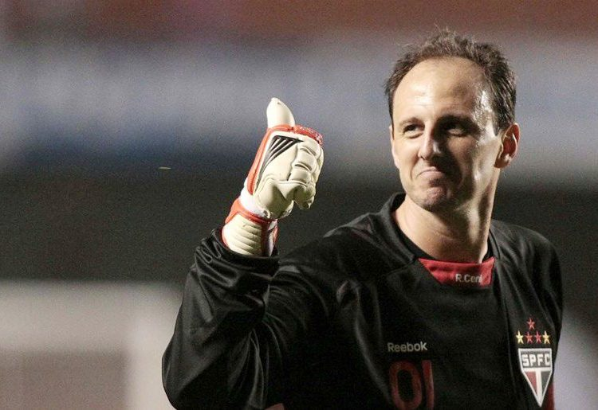

Rogério Ceni
Conquistas
Data de nascimento:22/01/1973
Campeão Mundial de 1993 e 2005
Campeão da Copa Libertadores de 1993 e 2005;
Campeão da Copa Sul-Americana de 2012
Campeão da Supercopa de 1993
Campeão da Recopa Sul-Americana de 1993 e 1994
Campeão da Copa Conmebol de 1994
Campeão da Copa Master Conmebol de 1996
Campeão Brasileiro de 2006, 2007 e 2008
Campeão do Torneio Rio-São Paulo de 2001
Campeão Paulista de 1992, 1998, 2000 e 2005
Importantes
maior goleiro artilheiro da história do futebol mundial com
131 gols
o jogador que mais vezes foi capitão de uma mesma equipe
(982 jogos)
Ficou conhecido pela torcida são-paulina como
MITO
Recebeu por seis vezes a Bola de Prata melhor jogador da posição durante o Campeonato Brasileiro
Prêmios individuais
Melhor Goleiro do Mundo 2005
Melhor Goleiro do Brasil: 2002, 2003, 2005 e 2006 – RSSSF
Seleção Ideal do Brasil: 2002, 2003, 2005 e 2006
10º Melhor Jogador do Mundo 2005
4º Melhor Goleiro do Mundo 2007
27º Melhor jogador do mundo 2007
Melhor Goleiro da América do Sul: 2005, 2006 e 2007
Goleiro Ideal da América do Sul: 2005 e 2006
Bola de Ouro do Mundial de Clubes da FIFA: 2005
Melhor jogador da final do Mundial de Clubes da FIFA:Chave de Ouro Toyota: 2005
Melhor Jogador da Copa Libertadores da América: 2005
Melhor Jogador da final da Copa Libertadores da América – Chave de Ouro Toyota: 2005
Melhor Goleiro da Copa Libertadores da América: 2005
Melhor Goleiro da Copa Sul-Americana: 2014
Bola de Ouro (Placar): 2008
Melhor jogador do Campeonato Brasileiro: 2006 e 2007